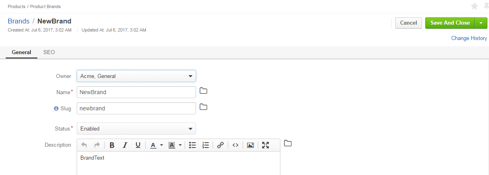
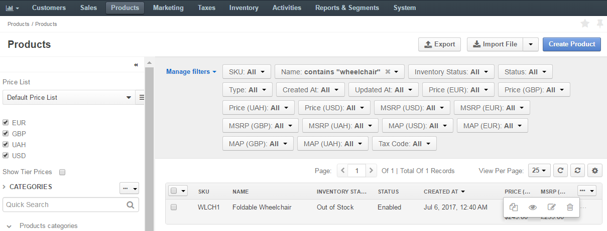
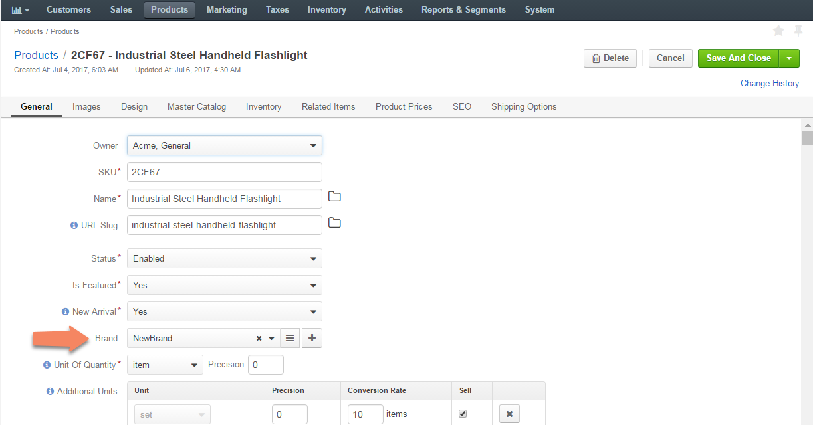
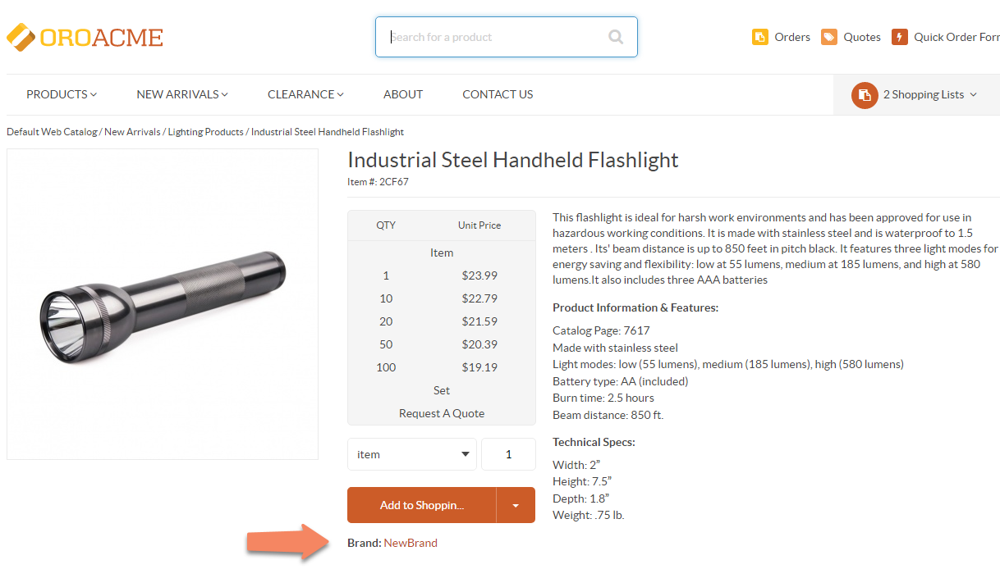
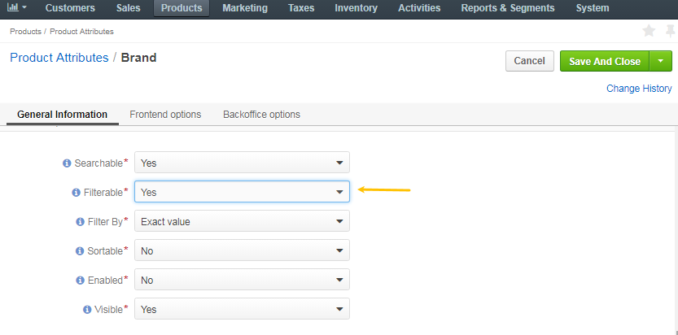
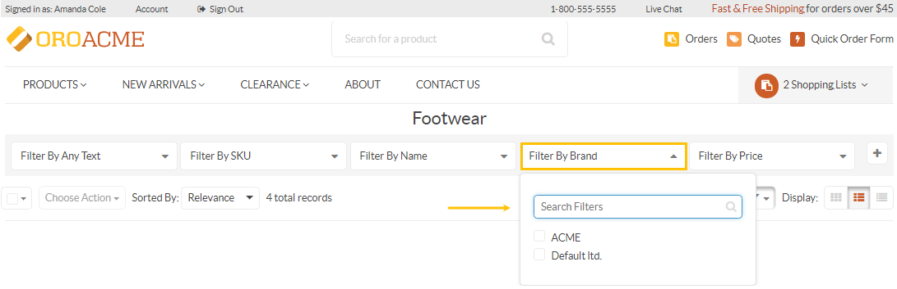

For enhanced eCommerce experience, Oro Application provides the ability to create and manage brands for your webstore. This means that each product can be associated with a specific brand, created in the management console.
In this section you will learn how to:
There are two ways to create a brand, from scratch and when creating/editing a product.
Navigate to Products > Product Brands in the main menu.
Click Create Brand.
The following page opens:
In the General section, define the following fields:
In the SEO section, provide the following information:
Click Save.
Once you have created a brand, you can assign it to a product the following way:
Navigate to Products > Products in the main menu.
Select the product you wish to assign this brand to, click the More Options menu on the far right of the product field, and then click the Edit icon.
On the product edit page, next to the Brand field, select the brand from the list, or click to view the list of all available brands.
To create a new brand, click +.
Click Save.
The brand has been assigned to the product and should now be available in the front store.
Once a brand has been created and assigned to a product, you may set it filterable for the customers to narrow down their search and navigate through your webstore in a more efficient and simple way.
Navigate to Products > Product Attributes in the main menu.
Click the brand attribute or at the end of the row to edit the attribute.
In the Frontend options section, set the Filterable option to Yes.
Click Save and Close.
The brand filter is now available in the front store.
